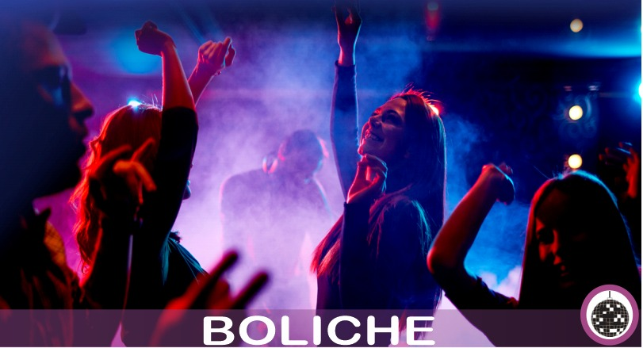

Comentarios

Carlos
el concepto de la aplicacion es algo bastante complejo, porque quiere reunir 5 comparadores en una sola aplicacion demás de ambicioso.

Oralis
el concepto de la aplicacion es algo bastante complejo, porque quiere reunir 5 comparadores en una sola aplicacion demás de ambicioso.
Oralis
el concepto de la aplicacion es algo bastante complejo, porque quiere reunir 5 comparadores en una sola aplicacion demás de ambicioso.
div
Jeyver
Escribe tus comentarios